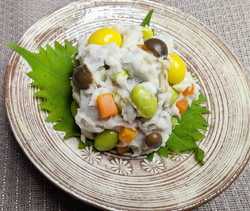

里芋のとも和え
- 調理時間：30分
- （一人当たり）
- カロリー：124kcal
- たんぱく質：4.2g
- 脂質：0.9g
- 炭水化物：25.8g
- 塩分：1.3g


＜2人分＞
- 里芋
- 200g
- しめじ(石づきをとっておく)
- 20g
- ニンジン
(サイコロ切りにする) - 20g
- ゆり根
(1枚ずつはがし丁寧に洗う) - 30g
- レンコン
(イチョウ切りにする) - 30g
- ゆでギンナン
- お好みで
- ゆで枝豆
(鞘から取り出す) - 20g
- 塩
- 小さじ1/3
- コショウ
- 少々
- 薄口醤油
- 少々
- 洋からし
- 適宜


- しめじ、ニンジン、ゆり根、レンコン、枝豆は各々、下準備して、熱湯でゆでる。
水気をしっかりきっておく。 - ①とギンナンをボウルにいれて、少量の薄口醤油(分量外)を回しかけ下味をつける。
- 里芋は皮つきのまま竹串がすっと入るくらいまでゆでる。
- 皮をむき、２/３量をすりこぎなどでつぶし、塩、コショウ、薄口醤油、洋からしを加えてよく混ぜる。
- 残りの里芋は一口大に切り、②の材料と合わせ、④で和える
里芋のとも和え
里芋は、肥大した茎を食べる野菜なので茎菜類に属します。土の中で、親芋を中心に分球したものを「小芋」、小芋から分球したものは「孫芋」と呼ばれます。一般的には小芋が多く出回っています。里芋特有のネバネバはガラクタンという成分で食物繊維の一種です。栄養素を摂るためにあえてぬめりを取らない調理法もありますが、煮物の時などは調味液が浸透しづらいという弱点もあります。食べる人や体調に合わせ、調理法を臨機応変に変えるのもよいですね。